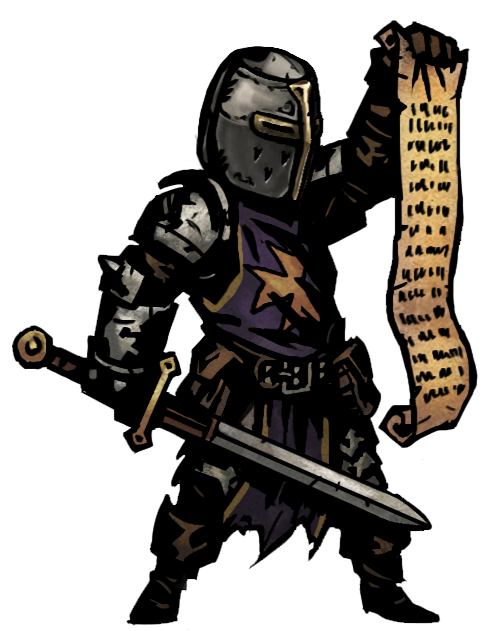
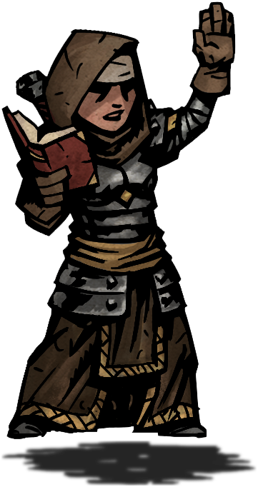
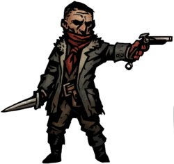
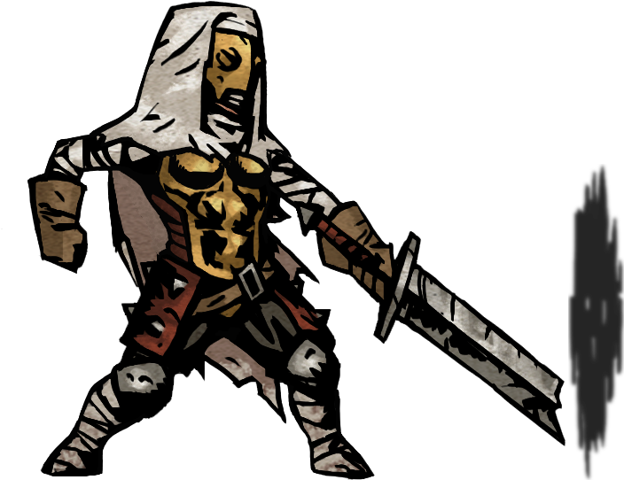
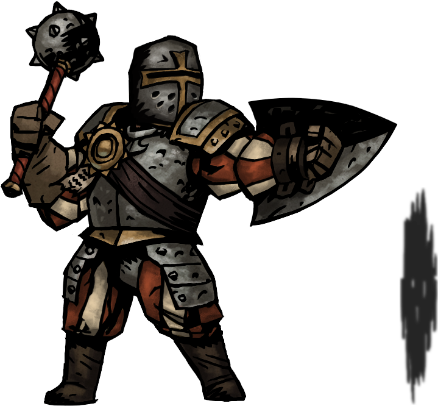
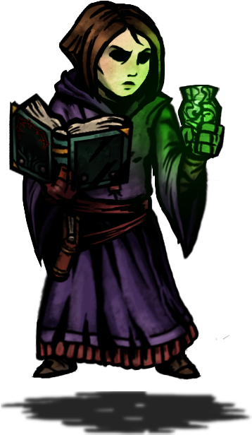
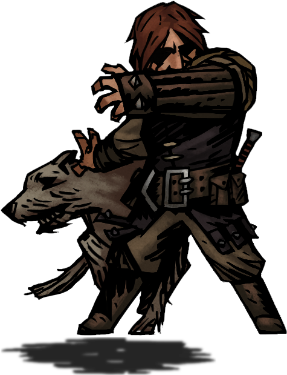

-
CRUSADER
Every cause needs a champion, a hero to rally otherwise common men to a righteous cause and lead them to victory. The Crusader is that champion. With holy blade in hand he smites the wicked and sends them back to the darkness from whence they crept. While his armor restricts his movement it affords him great protection, allowing him to stand in the frontlines to take the blows that his weaker comrades cannot.
No matter the pressures he faces he will remain strong, finding strength within himself to keep fighting on while inspiring others to do the same. Even in the midst of battle he can galvanize his allies, giving them the strength to fight off madness for a little longer. When the Crusader is leading the charge, all of hell will know to fear the flame.
-
VESTAL
The warrior nun channels her zeal for battle into healing abilities, holy judgements and dazzling explosions of light. A strong backbone to any party, the Vestal can also hold her own on the front line with a powerful mace bash and close-quarters condemnations.
-
BANDIT
A bandit seeking redemption on an old road, the Highwayman is one of the fastest classes in the game and is able to dish out a lot of damage quickly. He can be placed in both the front ranks and rend enemies with his short sword, or he can pursue enemies from the back with his trusty pistol. He has a lower HP value than most classes, but makes up for this with high evasion.
When night falls and all of his allies are settled around a campfire, the Highwayman is preparing for what dangers await. He'll spend his time performing maintenance on his weaponry, practicing his blade-work or setting up alarms to keep himself safe during the night. If he must interact with others it'll be with his dark sense of humor, which might upset some. But for what the Highwayman lacks in tact he makes up in unparalleled finesse. With a flintlock in one hand and a dirk in the other, the Highwayman is sure to make short work of his foes.
-
BOUNTY HUNTER

Sinister and precise, the Bounty Hunter specializes in targeting a single foe to deliver its head for the reward. He has found that simply striking before thinking is an ineffective way to kill, so he has taught himself many ways to take advantage of his foe's vulnerabilities.
If they wear armor, he can find the weak points in it. If they are reeling from a hit, he'll make a surprise attack to strike it down. Even the enemies who think they're safe behind their frontlines will find that the Bounty Hunter's grappling hook can pull them in or slice them up. And if all else fails, he can drop flash grenades or sucker punch enemies to disorient them. No matter the situation, this calculating killer will have an answer for it.
-
LEPER
Struggle, and futility — all one's days are a constant toil to shelter life's ember through one more night. The Leper not only knows but embraces such solemnity. Tortured existence has taught him to count not on the care of others. He has learned to channel his energy inward, a kingdom within one man. His power can neither serve nor comfort others; but, drawing on it, he can gain strength others can but dream of, or the endurance to bear what no other could. And when his massive blade falls, death's call rings loud to all caught in its thunderous arc. However, such force falls not nimbly, and foes may lightly evade their execution.
His dread sickness has given the Leper his name surely as it has taken his body. Huddled by a campfire, its ruinous toll becomes most evident, to himself and those lit by the same flames. Should their mental firmness be tenuous, the Leper may isolate himself to spare their peace of mind; a mercy, paid for with his own well-being. However, if his own solace be paramount, the protection and prison of his mask may be slipped — a calming intoxication of air upon a striken visage. While looking upon such maligned flesh may revolt those he shares the firelight with, true companionship he can always find, meditating on his lofty blade — a once officious weapon, now broken as the man who wields it. In the end, all will meet with death. The Leper sets his sights only on ensuring as many of the twisted horrors of this land as possible attend their final appointment, until his own may be postponed no more.
-
MAN AT ARMS
An old, battle-scarred veteran, the Man-at-Arms has seen enough war and bloodshed to last more than a dozen lifetimes. While he can no longer swing his great mace with the force he once could, you should not stand where he swings his mighty weapon. However it is not offense, but his defense, that makes the Man-at-Arms such a vital member of any team. His ability to read the enemy's movements allows him to draw fire to himself to defend his allies and then retaliate with surprising force.
The battlefield is a chaotic place, and the Man-at-Arms knows how to make himself heard. With his vociferous shouting he can issue vital commands to his men or let out a terrible bellow to strike fear into the enemy's heart. At camp, the Man-at-Arms can take time to instruct and practice with others, giving efficient information and life saving instruction. As long as the Man-at-Arms stands, he will never allow the line to break.
-
LIBRARIAN
"Sir, terribly sorry, sir, but there seems to have been some kind of horrific beaurocratic error. Sir, I appear to have been assigned to a mission, sir, and, sir, sir, I'm really not built for it sir. I mean, sir, there's going to be all sorts of danger, sir, and heavy lifting..."
Having spent some time studying abroad the Librarian finally returns to the Hamlet. While she'd much rather settle down by the hearth with a good book she is often reluctantly dragged out adventuring by her friends and companions. At home among treatises, tales and legends, this humble student of knowledge seeks merely to cram as much valuable information into her skull as possible and keep it there. That being said her companions value her sage advice for all can benefit from the wisdom contained within old stories and folklore.
The book she bears is an evil tome full of forbidden lore. She keeps it close to prevent it from falling into the wrong hands. When asked what kind of hands are "wrong" she will respond "the irresponsible ones".
-
HOUNDMASTER
A tough and uncommonly compassionate ex-lawman, the Houndmaster and his faithful Wolfhound work in tandem to bring down their enemies and protect the innocent. Together they stalk the back ranks, bursting forth in a flurry of harrying bleeds, gnashing teeth, and stunning blows. Should the tide of battle turn, the pair can support an ailing party by protecting the weak, and rallying the stressed.